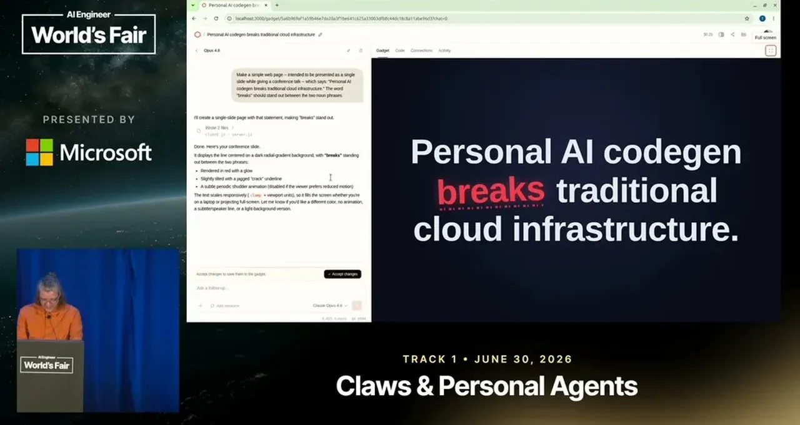
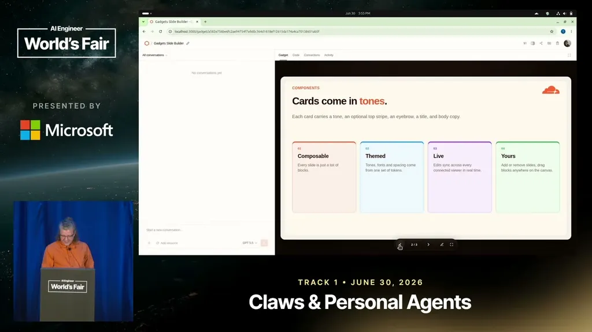
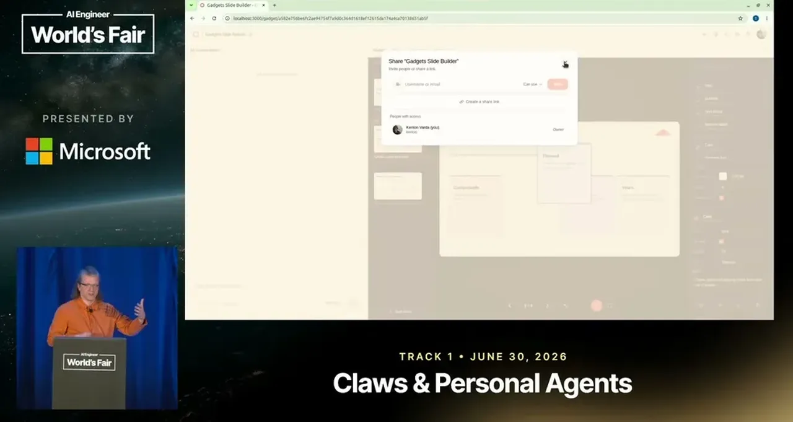
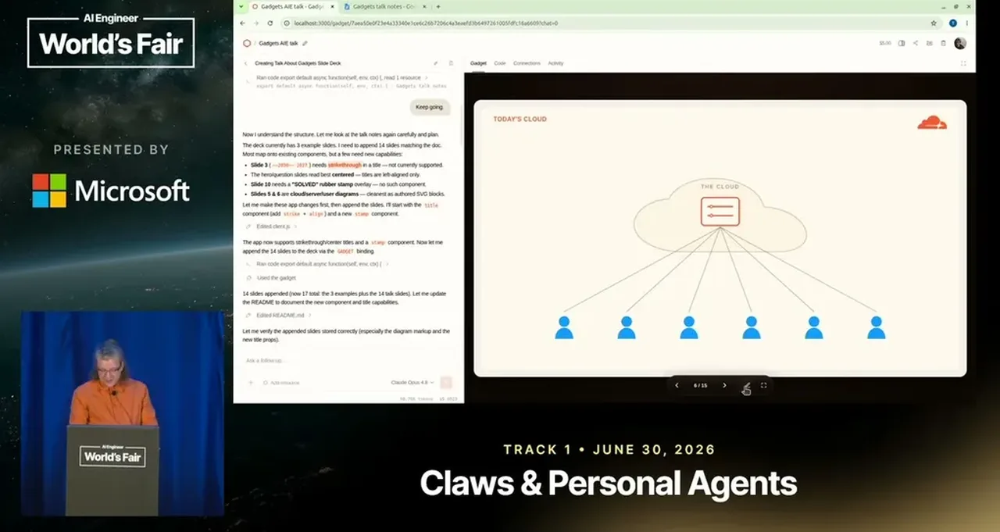
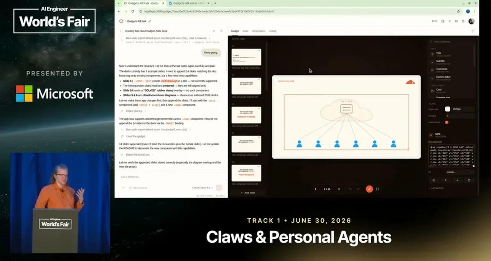

Gadgets: Personal app vibe coding that is actually safe
Cloudflare Gadgets defines per-user code as an office-suite document, with sandboxing via null-origin iframes plus isolated durable-object servers so vibe-coded changes are safe by construction.
If you only read one thing
- Varda's thesis: personal, per-user AI code generation breaks the assumption baked into 25 years of cloud architecture that one blessed server version runs for every user (c1, c2)
- His answer is Gadgets, an office-suite-style model where each app instance is a shareable document-like object, with sharing and access control implemented by the platform rather than the app -- and where Claude can extend the app's own code, not just its content, on request (c3, c4)
- Safety comes from sandboxing, not review: the UI runs in a null-origin iframe with no cookie or network access, talking only via postMessage to a durable-object server that is equally isolated, so an XSS bug in vibe-coded code has nothing to leak (c5, c6, c7)
The client UI and the durable-object server are each sealed off from the outside world and can only talk to each other through postMessage and a Captain Web RPC bridge, so a bug in either one has nothing to leak (ours).
Why this talk is a blueprint, not a take (ours)
Scope: A personal, per-user app platform (Gadgets) where each app instance is a shareable, individually customizable object, and the client and server code an AI agent writes for it are sandboxed so they can't leak data even if buggy.
A concrete way to let an AI agent extend a running app's own code for one user, safely, without app-level code review, by boxing the client UI in a null-origin iframe and the server in an equally isolated durable object that can only talk to each other. Sharing and access control are implemented once by the platform instead of by each app, so a gadget's own code cannot misconfigure who can see it.
Prerequisites the talk implies:
- A serverless runtime that supports per-instance sandboxed compute for both client and server code (the talk uses Cloudflare Workers durable objects and dynamic workers)
- An agent that can read the app's existing source plus a user-supplied doc well enough to both fill in content and extend the app's own components
- A platform-level sharing and access-control layer that apps opt into rather than implement themselves
What the talk does not say:
- No numbers on how many users, gadgets, or requests the system has handled outside Varda's own demo instances
- No description of how the platform limits resource use or cost across many per-user sandboxed instances
- No detail on the system for apps to talk to external services safely, which Varda says exists but does not have time to cover
- Not open source at the time of the talk, so the sandboxing claims cannot be verified against the actual code
- No discussion of team size, build cost, or development timeline beyond Varda calling it a side project
If you were to replicate one thing first: Before adding agent-driven code edits, prototype the sandbox boundary alone: a null-origin iframe UI that can only reach an isolated per-instance server process via postMessage, and confirm neither side can reach the network or another instance's data.
| Component | What it does (from the talk) | Evidence | Slide |
|---|---|---|---|
| Gadgets home | Office-suite-style list of a user's gadgets, each a separate shareable instance rather than one app deployment serving everyone | c9 · 08:54 |  |
| Blueprint | A gadget's exported code without its data, shared so other people can instantiate new gadgets from it | c10 · 09:58 |  |
| Platform sharing model | Share dialog and access control implemented once by the platform, not by each app, so a gadget's own code can't get sharing wrong | c3 · 11:03 |  |
| Claude / coding agent | Reads the app's existing code and a user-supplied doc, then extends the app's own components (not just its content) when a requested feature does not exist yet | c4 · 13:07 |  |
| Null-origin iframe UI | Runs the vibe-coded client UI in a null-origin iframe with a CSP that blocks cookie access and outside network calls | c5 · 14:10 | |
| postMessage + Captain Web RPC | The iframe's only channel out; postMessage carries a Captain Web RPC session that forwards calls on to the server | c6 · 14:40 |  |
| Durable object server | Vibe-coded server code runs as a Cloudflare Workers durable object, sandboxed the same way so it also cannot reach the outside world | c6 · 15:10 | |
| Cloudflare Workers runtime | Everything except the LLM runs on Workers with no containers and no database, only durable objects; the runtime (workerd) is open source and self-hostable | c7 · 16:16 |

The core problem
- Varda's stated single point: personal AI code generation is incompatible with the cloud infrastructure software is built on today.
- Traditional web deployment runs one server-side version of an app for every user, which is convenient for developers keeping everyone on the same version but structurally prevents individual users from customizing their own copy.
- One blessed server version
- Runs for every single user
- Convenient for developers
- Each user's copy can diverge
- No single version fits everyone
“My, uh, key point is personal AI codegen breaks traditional cloud infrastructure”
said at 00:31“the one version of your app, the one um you know blessed version runs uh for every single user”
said at 05:11Gadgets: an office-suite model instead of an app store
- Varda's prototype platform, Gadgets, treats apps like documents in an office suite: you open a home page listing your gadgets, each a distinct shareable instance rather than one deployment serving everyone.
- A blueprint is a gadget's exported code without its data, so someone can turn a useful gadget (a slide builder, a document editor, a kanban board) into a template other people instantiate their own copy from.
- In a demo, Claude both filled in a slide deck's content and extended the slide-building app itself with features (strikethrough formatting, an SVG-insert block) that weren't previously implemented, based on a doc describing what he wanted.
- One app instance
- Same deployment for every user
- Each gadget is its own instance
- Shareable like a Google Doc
- Blueprint exports code without data
“you need to think about more like uh like an office suite. So think about Google Docs. You open Google Docs, you have a bunch of documents, hundreds, maybe thousands”
said at 08:54“they decided that it was useful and they took a a blueprint of it which is just taking the code exporting the code without the data which they can then share with someone else and”
said at 09:58“all gadgets are um sharable and uh you know you can collaborate with other people on them and the sharing model is implemented by the platform instead of by the app itself”
said at 11:03“Claude read all the code for the app and read my doc and said, "Yes, actually, let's see. Slide three needs a uh strikethrough formatting. That's not implemented."”
said at 13:07How the sandbox makes vibe-coded code safe
- The app's UI runs inside a null-origin iframe with a content security policy that blocks cookie access and outside network calls, communicating only via postMessage to the parent frame, which relays it through a Captain Web RPC session to server-side code running as an isolated Cloudflare Workers durable object with the same outside-world restrictions.
- Because neither the client nor the server code can reach anything outside that closed loop, Varda argues an XSS bug in AI-generated code has nothing to leak.
- postMessage to iframe parent
- Captain Web RPC to the server
- Cookies
- Outside network calls
- Containers
- A database
“the UI that you see for the app here is running inside a null origin iframe sandbox um with content security policy set so that it basically cannot talk to anything any of the rest of the world”
said at 14:10“if you have an XSS bug, it actually doesn't end up mattering because these can't leak anything”
said at 15:10“There are no containers involved here. There's just dynamic workers. There are no there's no database involved. It just uses durable objects.”
said at 16:16Not open source yet
- Varda had planned to open-source the project at the end of this talk but says Cloudflare's CTO asked him to hold off in favor of a more careful, intentional release process, after internal excitement about the project grew in the weeks before the talk.
- Open-source at the end of this talk
- CTO asked him to hold off
- More careful, disciplined release process
“I think we need a uh we need to be more careful and disciplined and intentional about how we release this”
said at 17:47Commentary (ours)
The safety claim rests entirely on the sandbox boundary holding (iframe isolation, CSP, durable-object network restrictions) -- worth treating as a specific, testable security property to verify once the project ships, not as a general endorsement of AI-written code being safe.
Underlying detail — every claim, typed and timestamped (10)
| Stance | Claim | t |
|---|---|---|
| asserts | Personal AI code generation is fundamentally incompatible with traditional cloud infrastructure. | 00:31 |
| warns | Today's web deployment model runs one version of an app on the developer's server for every user, which structurally prevents users from customizing their own copy. | 05:11 |
| asserts | In the Gadgets platform, each app instance is a shareable object like a Google Docs document, with the sharing model implemented by the platform rather than by individual apps. | 11:03 |
| asserts | When asked to fill in a slide deck, Claude also added new features to the underlying slide-building app itself, such as strikethrough formatting that wasn't previously implemented. | 13:07 |
| asserts | The app UI runs inside a null-origin iframe sandbox with a content security policy that blocks it from accessing cookies or reaching anything outside the sandbox. | 14:10 |
| asserts | Because both the vibe-coded client and server can only talk to each other and are otherwise isolated, an XSS bug in the code doesn't matter -- there's nothing for it to leak. | 15:10 |
| asserts | The entire platform runs on Cloudflare Workers with no containers and no database, using only durable objects. | 16:16 |
| asserts | Cloudflare's CTO asked Varda to hold off on open-sourcing the project in favor of a more careful and intentional release process. | 17:47 |
| asserts | The platform works like an office suite: instead of documents you have gadgets, each a separate application instance you open, edit, and share. | 08:54 |
| asserts | A blueprint is a gadget's exported code without its data, which other people can then use to instantiate their own new gadgets. | 09:58 |
Machine-readable copy embedded in this page (script#ontology) and in the corpus ontology.